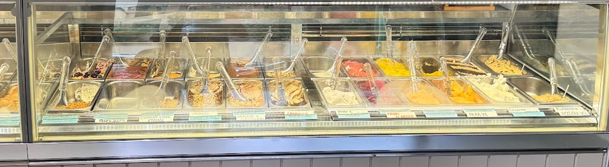
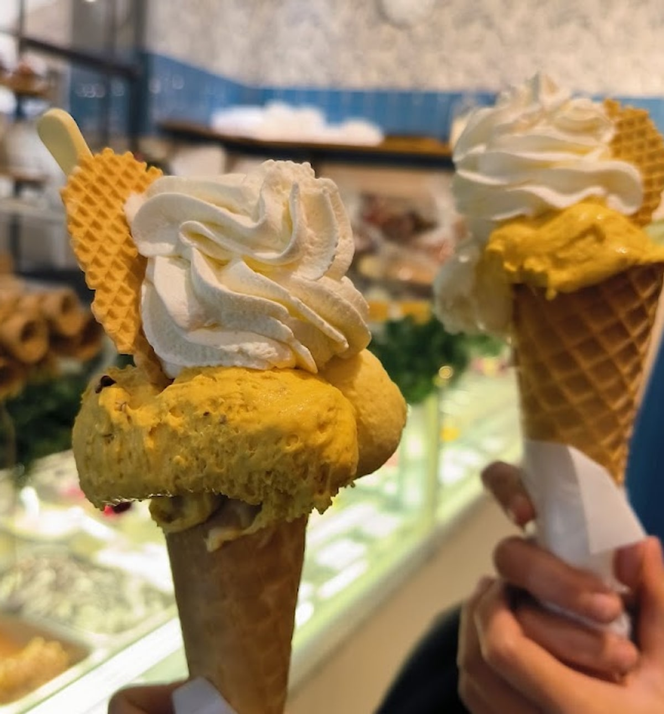

Gelateria artigianale · Bovisa, Milano
Dolce, o salato.
Nello stesso banco trovi il pistacchio e il pistacchio salato, il fondente e il fondente salato. Ventiquattro gusti, e una decisione da prendere.
↑ Provalo: cambia tutta la pagina, come cambiare idea davanti alla vetrina.
Il banco
Ventiquattro vaschette,
due modi di stare al mondo.
I gusti girano con le stagioni e con quello che c'è di buono: questi sono quelli che si trovano più spesso in vetrina. La selezione salata è più piccola per scelta — si fa quando viene bene.

Laboratorio a vista
Il gelato si fa lì,
mentre lo compri.
Non c'è un retro dove sparisce la lavorazione: il laboratorio è dietro il vetro, e chi entra vede la macchina, le vaschette che tornano piene e le mani che le riempiono.
È anche il motivo per cui la carta dei gusti non è mai la stessa due mesi di fila: si passa dalle creme classiche alla frutta secca, ai cioccolati monorigine, fino ai gusti gourmet fatti coi formaggi.
Prima di decidere, chiedi un assaggio. Lo danno volentieri, ed è il modo più rapido per capire da che parte stai.

Quando arriva
La granita si mangia
col cucchiaino.
Non si beve con la cannuccia: è quella densa, che sta in piedi. È stagionale, e quando arriva non lo annuncia un cartellone — lo scrivono a mano su un cartoncino appoggiato al banco.
«Sono arrivate le granite»
— il cartello scritto a mano, fotografato in negozio
Listino
I prezzi sono quelli
scritti sul muro.
- Baby, due palline piccole2,50
- Piccolo, due palline3,50
- Medio, tre palline4,50
- Grande, quattro palline5,00
- Brioche col gelato5,00
- Cono con panna montata3,00
- Frappè alta densità, 300 cc4,50
- Frappè alta densità, 500 cc6,00
- Panna o cioccolato, doppi0,50
- Panna e cioccolato, doppi1,00
★ Una porzione singola di panna montata o di cioccolato liquido è inclusa nel prezzo. Sta scritto sul loro cartello, ed è la cosa che sorprende di più chi entra la prima volta.
Ci sono anche le vaschette d'asporto, da mezzo chilo in su, e i frappè si possono fare col latte di riso. Prezzi rilevati in negozio: confermateli al banco.
Recensioni Google
4,4 su 751.
«Gelateria scoperta per caso passeggiando nel quartiere. La prima volta ho assaggiato un cono gusti eccellenti e con carattere, gianduia e pistacchio salato strepitosi. Consigliatissimo!»
Rosa Maria Smiles
«Gelato più che perfetto, si può scegliere incluso nel prezzo se mettere il cioccolato sciolto sotto o la panna, quantità del gelato perfetta e per questo lo consiglio vivamente.»
Valentina Dicorato
«Sono capitata oggi per caso, mai caso migliore. La ragazza che mi ha servito è stata super gentile, concessi ben 2 assaggi, entrambi (cannolo e cannella) eccelsi. Vastissima scelta, gusti ottimi, si sente la qualità della materia prima.»
Serena Cesandri
«La gelateria migliore che abbia mai provato in tutta Milano. Ragazze gentili ed educate, posto piccolo ma carino, gusti originali e per niente scontati!!»
Gaia Traversi
«Porzione per i 2 gusti nella coppetta bella generosa. In più compreso nel prezzo può scegliere l'aggiunta di panna o cioccolato sfuso sul fondo!»
Angela Hu
«Una sola parola: ECCELLENTE! La gelateria Dolci Storie, in via degli Imbriani è il posto ideale dove fermarsi per gustare un ottimo e squisito gelato, che sia in cono o coppetta.»
Franco Eugenio Castellano
Il negozio
Piccolo, e pieno.
Le foto pubbliche del negozio sono poche: queste sono quelle verificate. Con un servizio fotografico dedicato, il banco meriterebbe molto di più.
Dove siamo
Bovisa,
fino a tardi.
Via degli Imbriani 47-5120158 Milano
- lunedì13:00–23:30
- martedì13:00–23:30
- mercoledì13:00–23:30
- giovedì13:00–23:30
- venerdì13:00–00:00
- sabato13:00–00:00
- domenica13:00–23:30
Consumazione sul posto · asporto · consegna a domicilio
Chiama la gelateriaLa mappa è di Google: aprendola, Google riceve il tuo indirizzo IP e può usare i suoi cookie.
Domande
Che cosa sono i gusti salati?
Accanto ai gusti classici il banco tiene versioni salate delle stesse basi — il pistacchio salato e il fondente salato — e gusti gourmet fatti coi formaggi. Stessi ingredienti, portati dall'altra parte.
La panna e il cioccolato si pagano a parte?
No. Sul cartello del locale è scritto che una porzione singola di panna montata o di cioccolato liquido è inclusa nel prezzo. Si paga solo la doppia.
Fate la granita?
Sì, ed è quella da mangiare col cucchiaino, non da bere. È stagionale: quando arriva lo scrivono a mano sul cartello del banco.
A che ora aprite?
Tutti i giorni dalle 13, fino alle 23:30 — venerdì e sabato fino a mezzanotte. Non facciamo colazione.
Si può ordinare a domicilio?
Sì: oltre al banco ci sono asporto e consegna a domicilio. Per le vaschette conviene una telefonata.
Si può assaggiare prima di scegliere?
Sì, e conviene: è il modo più rapido per capire se il pistacchio che vuoi è quello dolce o quello salato.